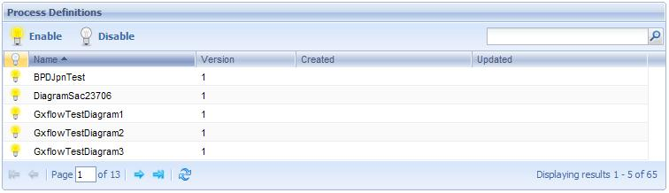
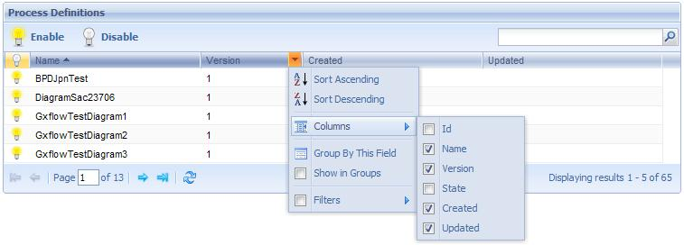

<fck:meta content="text/html; charset=utf-8" http-equiv="Content-Type"><fck:meta content="Word.Document" name="ProgId"><fck:meta content="Microsoft Word 11" name="Generator"><fck:meta content="Microsoft Word 11" name="Originator"> </fck:meta></fck:meta></fck:meta></fck:meta> Through this application process administrator users can visualize and control the process definitions existing in the system. The following figure shows the Process Definition application interface:
 <fck:meta content="text/html; charset=utf-8" http-equiv="Content-Type"><fck:meta content="Word.Document" name="ProgId"><fck:meta content="Microsoft Word 11" name="Generator"><fck:meta content="Microsoft Word 11" name="Originator"> The following sections describe the different components making up this application.</fck:meta></fck:meta></fck:meta></fck:meta> Button Tollbar
Process Definition Grid (status): Indicates if the process definition is enable. Id: Process Definition Id Name: Process definition name. Version: Process definition version number. State: Process definition current state. The possible statuses of a process definition are the following: Created: Process definition creation date. Updated: Date of the last process definition update.
|
| Backlinks | |
| HowTo: Using GXflow Entry Point User Control | Process Manager |